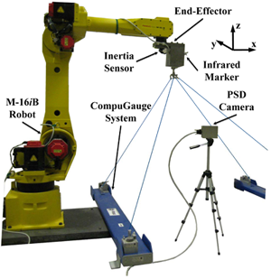
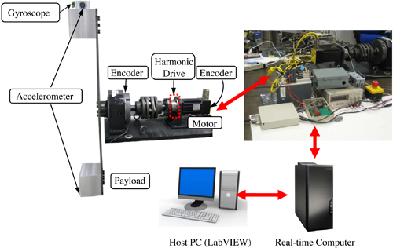

<div id="main">
    
<div id="content">
        	<div id="sidebar">
			<div class="sidebarbox">
               <h3>Contents:</h3>
				<ul class="sidemenu">
					<li><a href="#intro">Introduction</a></li>
                    <li><a href="#setup">Experimental Setup</a></li>
                    <li><a href="#topics">Research Topics</a></li>
                    <li><a href="#add_accomp">Additional Accomplishments to Date</a></li>
                    <li><a href="#pub">Recent Key Publications</a></li>
                    <li><a href="#researchers">Researchers</a></li>
                    <li><a href="#sponsor">Sponsor</a></li>
				</ul>
			</div>
			</div>

          <h2>Intelligent Control of Robot Manipulators</h2>
		  <h3 id="intro">Introduction</h3>
		  <p>Designing high-performance and low-cost robot manipulators is one of the ultimate challenges for engineers today. Key performance criteria for these robots are: 1) speed, 2) accuracy and repeatability, 3) vibration suppression, and 4) cost. In striving to meet these increasingly stringent performance goals, a mechatronic approach, which combines aspects< from both mechanical hardware and servo soware, is required. This research focuseson learning control, vision sensing dynamics compensation, kinematic visual servoing, and automatic sensor frame identication. The project utilizes an integrated analytical, simulation, and experimental eort to aain the objectives.</p>
		  <p>&nbsp;</p>
		  <h3 id="setup">Experimental Setup</h3>
		  <table width="100%" border="0" cellspacing="0" cellpadding="0">
		    <tr>
		      <td width="44%" align="center"><p></p>
	          <p><strong>FANUC M-16iB robot system</strong><br />
	            (6 joint; motor encoders, end-effector 9-DOF IMU,<br />
	            CompuGauge 3D position sensor, PSD camera;<br />
              MATLAB xPT Target)</p></td>
		      <td width="56%" align="center"><p></p>
	          <p><strong>Single joint indirect drive robot setup</strong><br />
	            (servo motor, harmonic drive, payload; motor side and load<br />
	            side encoders, load side gyroscope and accelerometers;<br />
              LabVIEW Real-Time and FPGA modules)</p></td>
	        </tr>
	      </table>
		  <p>&nbsp;</p>
		  <h3 id="topics">Research Topics</h3>
		  <p><a href="robot_manip/robot_manip_ILC.html">Iterative Learning Control</a><br />
	        <a href="robot_manip/robot_manip_VSDC.html">Vision Sensing Dynamics Compensation (VSDC)</a><br />
	        <a href="robot_manip/robot_manip_KVS.html">Kinematic Visual Servoing</a><br />
          <a href="robot_manip/robot_manip_ASFI.html">Automatic Sensor Frame Identication</a></p>
		  <p>&nbsp;</p>
		  <h3 id="add_accomp">Additional Accomplishments to Date</h3>
		  <h4>1. Sensor Development and Sensor Fusion</h4>
		  <p>To better measure and/or estimate the desired robot states in the mismatched robotic systems, a fast and precise position measurement device called PSD camera was developed in [4], and several dynamic and/or kinematic model based sensor fusion methods were developed in [1-6] to integrate the multiple sensor signals from both the motor side and the load side.</p>
		  <h4>2. Automatic Gain Tuning</h4>
		  <p>In order to expedite the gain tuning/validation process, automatic gain tuning methods based on extremum seeking control algorithm [7] or iterative feedback tuning scheme [8] were investigated.</p>
		  <h4>3. Optimal Trajectory Planning</h4>
		  <p>Without proper compensation, highly accelerating/decelerating motions may induce undesirable vibrations. Thus, a time optimal approach was proposed in [9, 10] to plan the robot trajectory such that it achieves accurate positioning while suppressing residual vibrations.</p>
		  <h4>4. Vibration Suppression and Friction Compensation</h4>
		  <p>Other more specic control objectives such as vibration suppression and friction compensation were also studied for the robotic systems with indirect drive mechanisms in [11-13].</p>
		  <p>&nbsp;</p>
		  <h3 id="pub">Recent Key Publications</h3>
		  <ol>
		    <li>W. Chen, and M. Tomizuka, "Direct Joint Space State Estimation in Robots with Multiple Elastic Joints," <em>IEEE Transactions on Mechatronics</em>, 2013, DOI: 10.1109/TMECH.2013.2255308</li>
		    <li>W. Chen, and M. Tomizuka, "Comparative Study on State Estimation in Elastic Joints," <em>Asian Journal of Control</em>, Vol. 16, No. 3, pp. 1-12, May 2014</li>
		    <li>W. Chen, and M. Tomizuka, "Load Side State Estimation in Robot with Joint Elasticity," in <em>Proceedings of the 2012 IEEE/ASME International Conference on Advanced Intelligent Mechatronics (AIM)</em>, pp. 598-603, July 11-14, 2012</li>
		    <li>C. Wang, W. Chen, and M. Tomizuka, "Robot End-eector Sensing with Position Sensitive Detector and Inertial
	        Sensors," in <em>Proceedings of the 2012 IEEE International Conference on Robotics and Automation (ICRA)</em>, pp. 5252-5257, 2012</li>
		    <li>W. Chen, and M. Tomizuka, "Estimation of Load Side Position in Indirect Drive Robots by Sensor Fusion and
	        Kalman Filtering," in <em>Proceedings of the 2010 American Control Conference (ACC)</em>, pp. 6852-6857, June 30-July 2, 2010</li>
		    <li>S. Jeon, M. Tomizuka, and T. Katou, "Kinematic Kalman Filter (KKF) for Robot End-Eector Sensing,"<em> ASME
		      Journal of Dynamic Systems, Measurement and Control</em>, Vol. 131, Iss. 2, February 2009 <strong>(2010 Rudolf Kalman Best Paper Award)</strong></li>
		    <li>M. Chan, K. Kong, and M. Tomizuka, "Automatic Controller Gain Tuning of a Multiple Joint Robot Based on Modied Extremum Seeking Control," in <em>Proceedings of the 18th IFAC World Congress</em>, pp. 4131-4136, 2011</li>
		    <li>C-C. Wang and M. Tomizuka, "Sensor-based controller tuning of indirect drive trains," in Proceedings of the10th <em>IEEE International Workshop on Advanced Motion Control</em>, pp.188-193, 26-28 March 2008</li>
		    <li>P. Reynoso-Mora, W. Chen, and M. Tomizuka, "On the Time-optimal Trajectory Planning and Control of Robotic Manipulators Along Predened Paths," in <em>Proceedings of the 2013 American Control Conference (ACC)</em>, Washington, DC,
	        June 17-19, 2013</li>
		    <li>P. Reynoso-Mora, and M. Tomizuka, "LQ-Based Trajectory Tracking of Robotic Manipulators With "Near" Dynamically Feasible Time-Optimal Trajectory," in <em>Proceedings of the 2012 ASME International Symposium on Flexible Automation (ISFA)</em>, paper No. ISFA2012-7271, 2012 <strong>(Best Theory Paper Award)</strong></li>
		    <li>W. Chen, K. Kong, and M. Tomizuka, "Hybrid Adaptive Friction Compensation of Indirect Drive Trains," in <em>Proceedings of the 2009 ASME Dynamic Systems and Control Conference (DSCC)</em>, pp. 313-320, October 12-14, 2009</li>
		    <li>C-H. Han, C-C. Wang, and M. Tomizuka, "Suppression of vibration due to transmission error of harmonic drives
		      using peak filter with acceleration feedback," in <em>Proceedings of the 10th IEEE International Workshop on Advanced Motion Control</em>, pp.182-187, 26-28 March 2008</li>
		    <li>S. Jeon and M. Tomizuka, &quot;Stability of Controlled Mechanical Systems with Ideal Coulomb Friction,&quot; <em>ASME Journal of Dynamic Systems, Measurement</em>, and Control, vol. 130, no. 1, January, 2008</li>
	      </ol>
<p>&nbsp;</p>
		  <h3 id="researchers">Researchers</h3>
          <table width="100%" border="0" cellpadding="0" cellspacing="0" class="researchers">
            <tr>
              <td width="31%">Wenjie Chen</td>
              <td width="38%">Postdoctoral researcher</td>
              <td width="15%"><a href="mailto:wjchen@berkeley.edu" target="_new">Email</a></td>
              <td width="16%"><a href="http://msc.berkeley.edu/wjchen/" target="_new">Homepage</a></td>
            </tr>
            <tr>
              <td>Pedro Reynoso-Mora</td>
              <td>Graduate student</td>
              <td><a href="mailto:preynoso@berkeley.edu" target="_new">Email</a></td>
              <td>&nbsp;</td>
            </tr>
            <tr>
              <td>Michael Chan</td>
              <td>Graduate student</td>
              <td><a href="mailto:michael.l.g.chan@berkeley.edu" target="_new">Email</a></td>
              <td>&nbsp;</td>
            </tr>
            <tr>
              <td>Cong Wang </td>
              <td>Graduate student</td>
              <td><a href="mailto:wangcong@berkeley.edu" target="_new">Email</a></td>
              <td>&nbsp;</td>
            </tr>
            <tr>
              <td>Chung-Yen Lin</td>
              <td>Graduate student</td>
              <td><a href="mailto:chung_yen@berkeley.edu" target="_new">Email</a></td>
              <td>&nbsp;</td>
            </tr>
            <tr>
              <td>Ernesto Solanes</td>
              <td>Visiting scholar</td>
              <td><a href="mailto:esolanes@idf.upv.es" target="_new">Email</a></td>
              <td>&nbsp;</td>
            </tr>
            <tr>
              <td>&nbsp;</td>
              <td>&nbsp;</td>
              <td>&nbsp;</td>
              <td>&nbsp;</td>
            </tr>
            <tr>
              <td><strong>Recent graduates:</strong></td>
              <td>&nbsp;</td>
              <td>&nbsp;</td>
              <td>&nbsp;</td>
            </tr>
            <tr>
              <td>Chenghuei Han</td>
              <td>GE Research, Germany</td>
              <td><a href="mailto:norahann@berkeley.edu" target="_new">Email</a></td>
              <td>&nbsp;</td>
            </tr>
            <tr>
              <td>Chun-Chih Wang</td>
              <td>Formfactor</td>
              <td><a href="mailto:ccwang@me.berkeley.edu" target="_new">Email</a></td>
              <td>&nbsp;</td>
            </tr>
            <tr>
              <td>Soo Jeon</td>
              <td>University of Waterloo, Canada</td>
              <td><a href="mailto:soojeon@mecheng1.uwaterloo.ca" target="_new">Email</a></td>
              <td>&nbsp;</td>
            </tr>
          </table>
          <p>&nbsp;</p>
          <h3 id="sponsor">Sponsor</h3>
          <p><a href="http://www.fanucrobotics.com/" target="_new">FANUC Corporation</a></p>
      </div>

</div>
